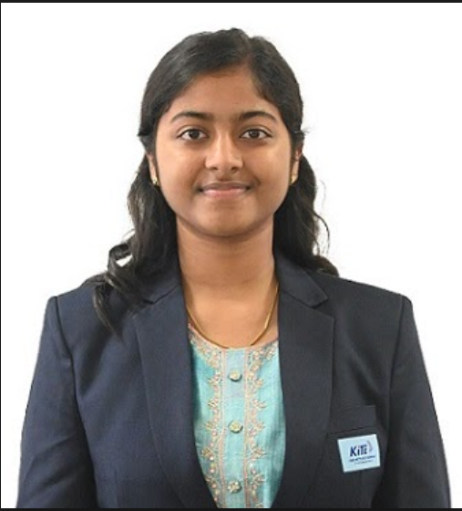

Hi! I'm Dharshini R.S, a B.Tech Information Technology student at KGiSL Institute of Technology. I'm interested in exploring technology, building useful projects, and continuously improving my programming and development skills.
I'm currently learning and working with different areas of software development. My main interest is in the IT field, especially web development and building practical applications.
I enjoy learning by creating projects, contributing to open-source repositories, and solving programming and DSA problems.
I'm working towards becoming a Full Stack Developer and want to build strong skills in:
Guardian Eyes
AI-Powered Baby Safety & Care Monitoring System
GuardianEyes is a real-time baby safety monitoring system that uses an existing camera to identify potentially risky situations and alert parents.
The main goal is prevention rather than surveillance, by providing timely alerts when potentially unsafe situations are detected.
GITHUB:
Dharshini-RS
LinkedIn:
Dharshini-LinkedIn